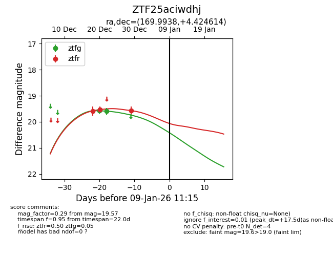
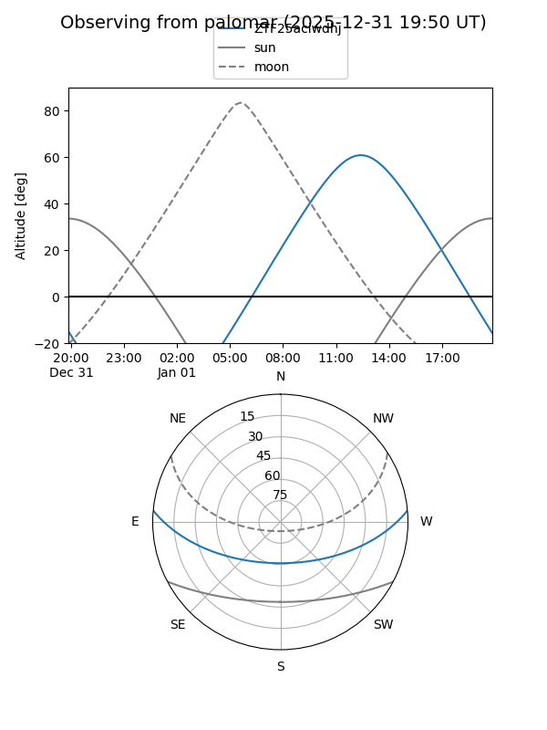
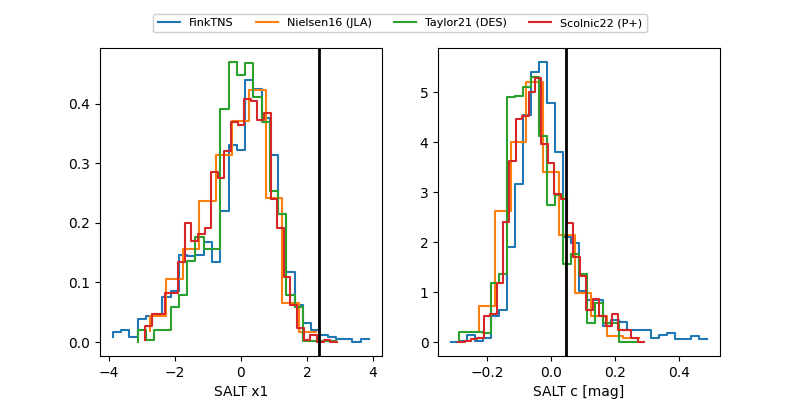

ZTF25aciwdhj
Target ZTF25aciwdhj at 2025-12-31 17:00
Aliases and brokers:
FINK:
Lasair:
ALeRCE:
alt names
ZTF25aciwdhj (ztf,fink_ztf)
Coordinates:
equatorial (ra, dec) = 169.9938,+4.42461
equatorial (HMS+DMS) = 11:19:58.52,+04:25:28.61
galactic (l, b) = (255.0469,+58.51593)
Flags:
Photometry:
last ztfg=19.60, ztfr=19.57
2 ztfg, 3 ztfr detections
Lightcurve

Visibility


Additional plots
